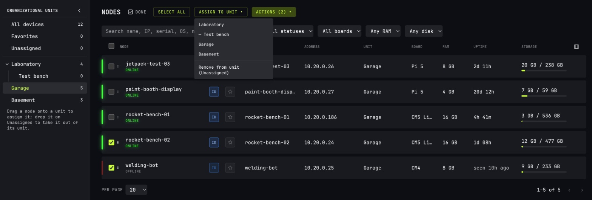

A tour of the interface
Where each section is and how to read the Nodes list.
Find your way around the web UI. Each top-level section links to its own page.

Where things are
- Nodes lists your devices. Click a row to open its panel (The node panel), or click Add node to adopt one (Add a device).
- Organization holds your units and the policies they set (Organization and units).
- Credentials controls who can log in to devices (Access and credentials).
- Secrets holds values for devices and playbooks, and adoption tokens (Secrets and variables).
- Operations has playbooks and their runs (Playbooks) and your OS images (Install an operating system).
- Utilities keeps software such as security updates configured on nodes (Utilities).
- Status lists nodes that need you and the command history (Status and audit).
- The round badge at the top right opens your password, sign-in settings and team (Team and security).
The Organizational Units sidebar on the left filters most pages to one unit. You create and rename units on the Organization page.
Read a node's status
The coloured bar at the left of each row and the word under the name give the node's status.
| Colour | Status |
|---|---|
| Green | ONLINE |
| Violet | RECOVERY, the network-boot recovery system |
| Yellow with PENDING | AWAITING APPROVAL |
| Yellow | Restarting, installing an OS, shutting down, ready for adoption |
| Orange | MAINTENANCE, a command is running |
| Blue | FLASHING the bootloader, or BUSY |
| Red | OFFLINE, or the last adoption or OS install failed |
| Grey | UNREACHABLE, or ADOPTING |
Hover over a badge next to a name, such as REBOOT PENDING or UNDER-VOLTAGE, to see what it means.
Find a node
Type in the search box to match a name, IP address, serial, OS or notes. The dropdowns narrow by status, board, RAM and disk, and they combine with the unit selected in the sidebar.
Every live node falls under one of Online, Recovery, Maintenance or Offline, so if a node seems missing, step through them.
Move nodes into a unit
- Click Select / Assign to unit next to the page title.
- Tick the nodes, or click Select all.
- Open Assign to unit and pick a unit, or Remove from unit (Unassigned).
- Click Done.
In selection mode you can also drag the ticked nodes onto a unit in the sidebar. Actions in the same toolbar reboots, runs a playbook on, or deletes the selected nodes.
